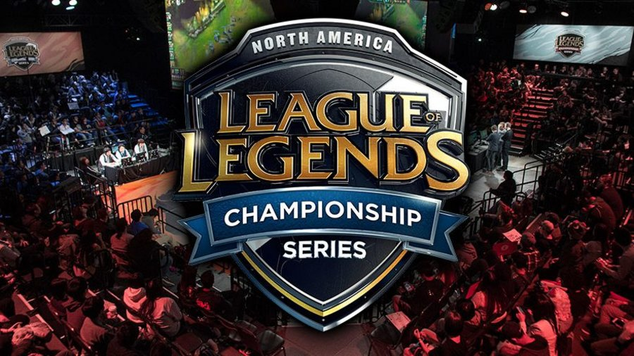

League of Legends is very popular worldwide. Each year, the best teams in each region, NA, EU, Korea, China, and Latin America come together to worlds. The best teams compete to become the worlds best. Korea is currently the most dominant region but other regions like China and NA are slowly catching up. To qualify for Worlds, you need to be the best in your home region first. Teams compete in both spring and summer splits for the chance at becoming the number one seed in their region. The top three seeds of each region are accepted to participate at Worlds (LolEsports, 2017).
Results of professional games and player interviews can be found on the League of Legends eSports website: lolesports.com
